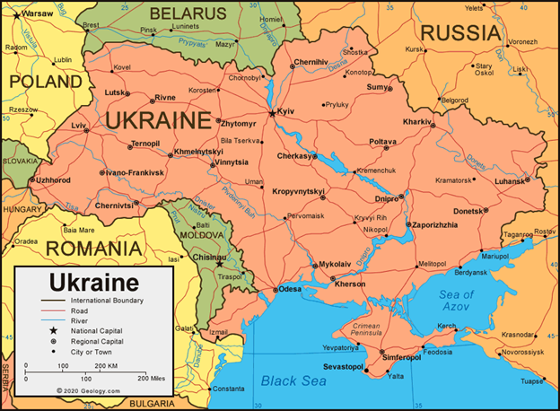
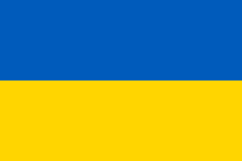
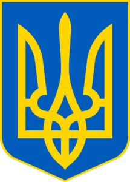
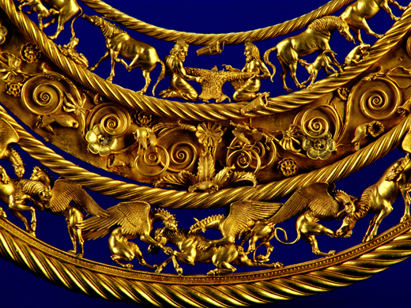
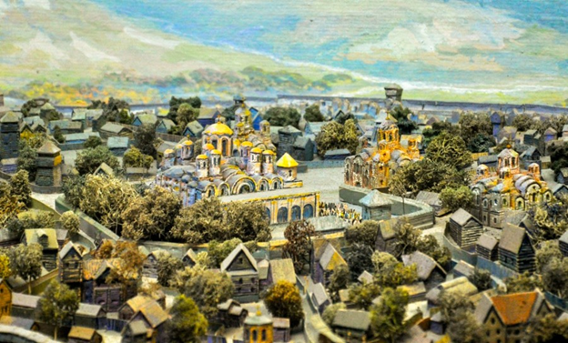
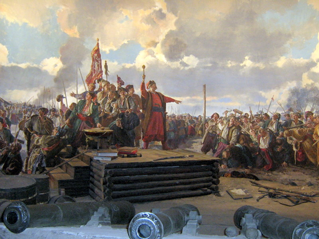
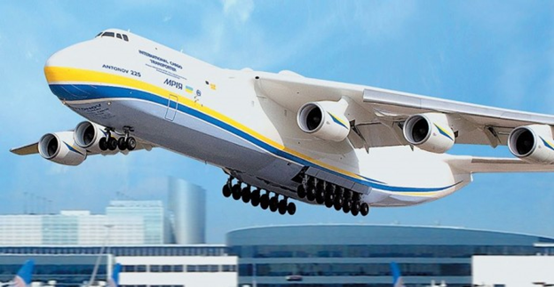
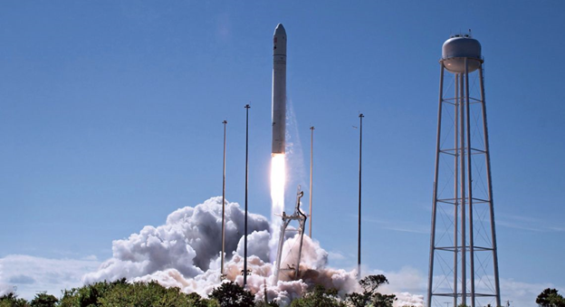
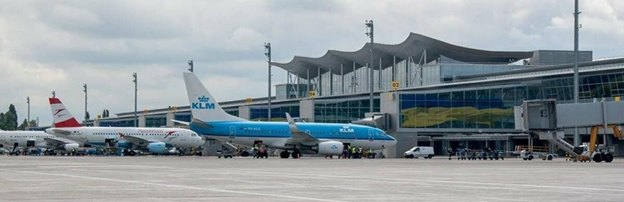
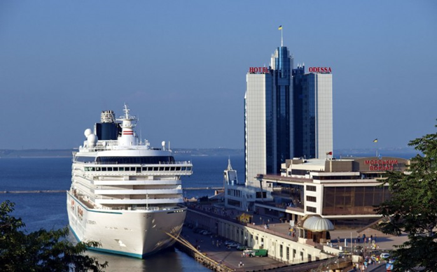

Україна
Україна – держава у Східній Європі. Україна займає площу 603 628 км2 (233 062 квадратних миль) і є другою за величиною країною в Європі. Населення України становить близько 44,7 мільйона чоловік, що робить її восьмою за чисельністю населення країною в Європі. Її столицею і найбільшим містом є Київ.
Загальні відомості про Україну
Сусіди
Україна межує з: Європейським Союзом (Словаччина, Польща, Угорщина, Румунія), Молдовою, Білоруссю, Росією.
Столиця і найбільші міста
Київ — столиця України. Це також найбільше місто за площею (близько 800 квадратних кілометрів) і за кількістю населення (приблизно 3,5 мільйона людей). Інші важливі міста: Харків, Дніпро, Одеса, Донецьк, Львів.
Етнічний склад
Українці – 77,8%, росіяни – 17,3%, кримські татари – 0,5%, інші – 4,9%.
Ім’я
Назва «Україна» (УКРАЇНА) походить від слов’янського слова «край», що означає «земля» або «кордон», або також «батьківщина», «край, країна». Найдавніша згадка про слово «Україна» датується 1187 роком (Київський літопис).
Прапор
Український прапор складається з двох рівних горизонтальних смуг синього та жовтого кольорів, що символізують блакитне небо та жовті пшеничні поля.
Герб
Називається він Тризуб (або Тризуб), у тому ж кольорі, що й на українському прапорі – синій щит із золотим тризубом на ньому. Оскільки він датується дуже давніми часами, є кілька пояснень його значення.
Гімн
Для кожного громадянина України дуже важливі такі слова: «Ще не вмерла Україна ні слава ні воля». З цих слів починається гімн України. Тексти пісень написав Павло Чубинський, а музику — Михайло Вербицький.
Державна мова
Єдиною державною мовою України є українська, що належить до індоєвропейської родини, слов’янської групи мов.
Релігія
За даними незалежного опитування 75,2 % респондентів вірять у Бога і 22 % сказали, що не вірять у Бога. 37,4 % сказали, що регулярно відвідують церкву. Більшість віруючих українців – православні (або східні православні), є також греко-католики, римо-католики, мусульмани, євреї.
Уряд
Україна є унітарною напівпрезидентською конституційною республікою. Україна має свій парламент (Верховну Раду), Уряд (Кабінет Міністрів), Президента. Адміністративний поділ: Україна складається з 24 областей (областей) та Криму. Україна як суверенна і незалежна держава існує з 1991 року.
Географія
Розташована в центрі Європи, Україна є найбільшою повністю європейською державою і другою за величиною державою в Європі (після європейської частини Росії, перед Францією). Ландшафт України складається здебільшого з родючих рівнин (або степів) і плоскогір’їв, перетинених такими річками, як Дніпро або Дніпро (2200 км, 1204 км в межах України), Сіверський Донець, Дністер та Південний Буг. Територію України омивають Чорне та Азовське моря. Гори: Карпати (західна сторона) і Кримські (південна сторона).
Клімат
В Україні переважно помірний клімат із спекотним літом, холодною зимою (снігопади поширені), м’якою весною та осінню.
Національні свята
Українці люблять свята та урочистості, але лише деякі з них є неробочими. Це: 1 січня – Новий рік; 7 січня – Православне Різдво; Великдень; 1-2 травня – День праці; 8-9 травня – День пам’яті та День Перемоги; Трійця; 28 червня – День Конституції; 24 серпня – День Незалежності; 14 жовтня – День захисника України.
Гроші
Грошова одиниця України — українська гривня (UAH), введена в 1996 р. Названа на честь міри ваги, яка використовувалася в середньовічній Україні. Це могло вказувати на щось цінне, що носили на шиї, зазвичай із срібла або золота. Гривня поділяється на 100 копійок (монети). Банкноти — 1, 2, 5, 10, 20, 50, 100, 200, 500, 1000.
Візи
Без візи на невизначений термін в Україну можуть в’їжджати громадяни 5 наступних країн: Вірменії, Азербайджану, Грузії, Молдови, Узбекистану. Власники паспортів ЄС, Канади, США, Туреччини та інших країн можуть в’їхати в Україну без візи на термін перебування до 90 днів протягом 180 днів.
Історія
Територія сучасної України була заселена з 32 тис. до н.е.
У середні віки ця територія була ключовим центром східнослов’янської культури, а потужна держава Київська Русь становила основу української ідентичності.
Після її роздробленості в 13 столітті територія була оскаржена, управлялася та поділена різними державами, включаючи Річ Посполиту, Австро-Угорщину, Османську імперію та Росію. Козацька республіка виникла і процвітала протягом 17-18 століть, але її територія врешті була розділена між Польщею та Російською імперією.
Після російської революції виник український національний рух за самовизначення, і 23 червня 1917 р. було проголошено міжнародно визнану Українську Народну Республіку. Після Другої світової війни західна частина України об’єдналася в Українську Радянську Соціалістичну Республіку, і вся країна стала частиною Радянського Союзу. Україна здобула незалежність у 1991 році після розпаду Радянського Союзу.
Україна сьогодні
Після здобуття незалежності Україна проголосила себе нейтральною державою; вона створила обмежене військове партнерство з Росією та іншими країнами СНД, а також встановила партнерство з НАТО у 1994 році. 1 січня 2016 року Україна застосувала економічний компонент Поглибленої та всеосяжної зони вільної торгівлі з Європейським Союзом.
Україна є унітарною республікою за напівпрезидентською системою з окремими владами: законодавчою, виконавчою та судовою. Країна є членом Організації Об’єднаних Націй, Ради Європи, Організації з безпеки і співробітництва в Європі (ОБСЄ), організації ГУАМ.
Економіка
Україна виробляє майже всі види транспортних засобів і космічних кораблів. Літаки «Антонов» та КрАЗи експортуються в багато країн.
Більшість українського експорту експортується до Європейського Союзу та СНД. З моменту здобуття незалежності Україна має власне космічне агентство – Національне космічне агентство України (НКАУ). Україна стала активним учасником наукового освоєння космосу та місій дистанційного зондування. З 1991 по 2007 рік Україна запустила шість саморобних супутників і 101 ракету-носій, продовжує проектувати космічні кораблі.
До зростаючих секторів української економіки належить ринок інформаційних технологій (ІТ). Україна посіла четверте місце у світі за кількістю сертифікованих ІТ-спеціалістів після США, Індії та Росії.
Через свої великі родючі сільськогосподарські угіддя Україна є одним із найбільших у світі експортерів зерна.
Україна має один із найбільш рівномірних розподілів доходів, виміряних індексом Джіні та коефіцієнтом Пальми.
Транспорт
Загалом українські дороги з твердим покриттям простягаються на 164 732 кілометри (102 360 миль). Основні маршрути, позначені літерою «М» для «Міжнародний», поширюються на всю країну та з’єднують усі великі міста України, а також забезпечують транскордонні маршрути до сусідів країни. Залізничний транспорт України з’єднує всі великі міські райони, портові споруди та промислові центри з сусідніми країнами. Загальна протяжність залізничної колії в Україні становить 22 473 кілометри (13 964 миль), з яких 9 250 кілометрів (5 750 миль) було електрифіковано в 2000-х роках. Нині держава має монополію на пасажирські залізничні перевезення, і всі поїзди, крім тих, що працюють у співпраці з іншими іноземними компаніями на міжнародних маршрутах, обслуговує її компанія «Укрзалізниця».
Повітряний транспорт швидко розвивається, завдяки програмі безвізу для громадян ЄС та громадян ряду інших західних країн, авіаційний сектор країни обслуговує значно збільшену кількість мандрівників.
Київ Бориспіль — найбільший міжнародний аеропорт повіту; він має три основні пасажирські термінали та є базою для флагманського перевізника країни — «Міжнародні авіалінії України». Серед інших великих аеропортів країни – Харків, Львів, Дніпро та Одеса. В Україні є ряд авіакомпаній, включаючи Windrose Airlines, SkyUp, Azur Air Ukraine та інші. Авіалінії Антонова, дочірнє підприємство Аерокосмічного конструкторського бюро імені Антонова, є єдиним оператором найбільшого в світі літака Ан-225.
Міжнародні морські подорожі в основному здійснюються через Одеський порт, звідки регулярно відправляються пороми до Стамбула, Варни та Хайфи.